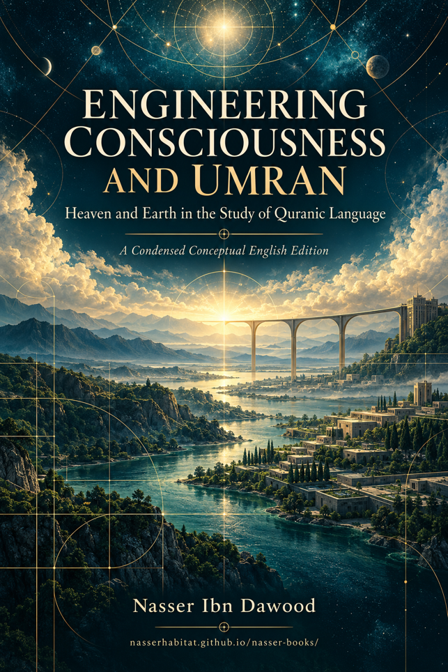

Nasser Ibn Dawood

Text extracted from the author-supplied Word edition; consult the original source.
Preparing the reader…
Engineering Consciousness and Umran
Heaven and Earth in the Study of Quranic Language
Nasser Ibn Dawood
A Condensed Conceptual English Edition
This book explores how Quranic images, distinctions, and relationships can inform human understanding and responsible collective life. Its central proposal is a dialogue between higher standards and the lived conditions in which people receive, interpret, and enact them.
Umran names the author’s concern with inhabiting and sustaining a shared world. It includes social organization, material conditions, ethical responsibility, and the consequences of knowledge in practice. It is not treated as a single Quranic term or as an already demonstrated universal theory.
The Arabic work combines twenty-three chapters in six parts with a substantial record of critical audits. This adaptation retains that architecture while compressing extended discussions, repeated diagrams, and technical inventories.
Within the project Fiqh al-Lisan al-Qurani — Engineering Revelation
2026
The Global Knowledge Manifesto
Knowledge is a universal right. The author firmly believes that wisdom should not be locked behind paywalls or language barriers.
Global Access Policy: All books in this library are available for free in multiple digital formats: PDF, HTML, DOCX, and TXT.
The Digital Library: As of early 2026, the collection hosts 68 volumes, comprising 34 in Arabic and 34 in English, optimized for AI-assisted research and digital archiving. This dated description records the library at that point; it is not a present inventory.
Official Platforms
Main website: https://nasserhabitat.github.io/nasser-books-v2/
GitHub: nasserhabitat/nasser-books
Translator’s Note — The Bridge of Meaning
This English edition is a condensed conceptual adaptation. It is not a word-for-word translation, nor a replacement for the Arabic research text. It makes the argument accessible to readers unfamiliar with the author’s terminology, including readers who do not share the book’s religious commitments.
Quranic references retain their surah names and verse numbers. English explanations convey the sense relevant to the discussion; they are not presented as a complete translation of the Quran. Arabic concepts remain identifiable through transliteration and a glossary.
The adaptation preserves the distinction between textual observations, interpretive proposals, and established findings within a limited audit. OPEN, CLOSED, SUPPORTED, REJECTED, and NOT ESTABLISHED retain their evidentiary roles. A CLOSED audit does not turn an imaginative analogy into a universal law.
Distribution follows the author’s open-access policy and CC BY-SA 4.0 licensing framework.
Contents
Reading the Argument and Its Method — 4
Part One — Foundations of the Heaven and Earth Model
1. Earth as Ground and Reception — 5
2. Heaven as Higher Reference — 6
3. Rain and the Generation of Fruit — 7
Part Two — Movement and Responsible Action
4. A Tractable Earth and Human Responsibility — 8
5. Travel and Reflective Observation — 9
6. Mountains and the Need for Stability — 10
Part Three — Layering and the Recognition of Signs
7. Seven Heavens and the Limits of a Cognitive Model — 11
8. Signs and the Visibility of Meaning — 12
Part Four — Discernment and Public Responsibility
9. Insight and Conscious Awareness — 13
10. Reasoning and Reflection — 14
11. Wisdom and Sound Direction — 15
12. Balance and Responsible Witnessing — 16
13. Criterion and Distinction — 17